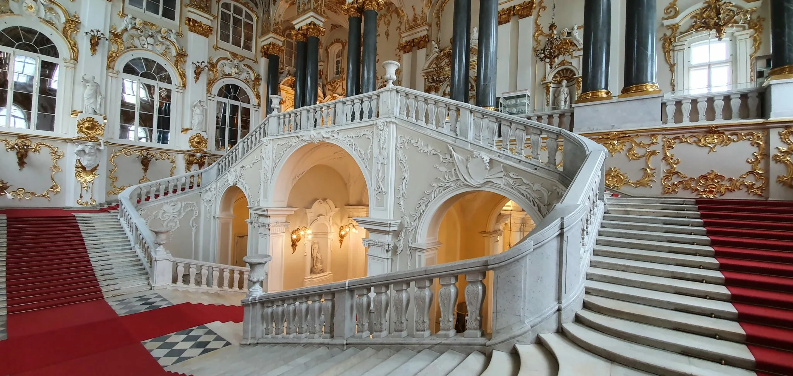
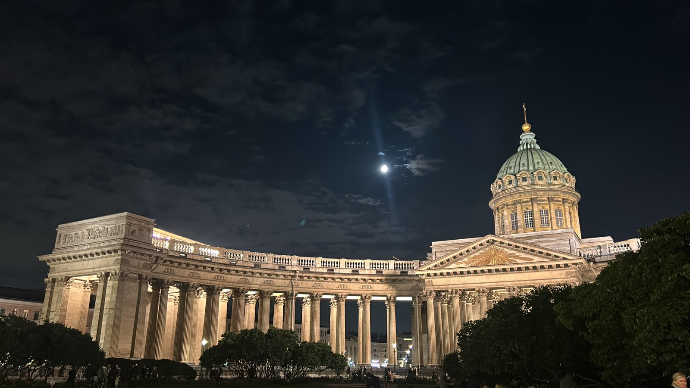

Эрмитаж
«Государственный Эрмитаж» — один из крупнейших и величайших художественных музеев мира: грандиозный комплекс в самом сердце города, чья коллекция насчитывает около 3 миллионов шедевров искусства и памятников мировой культуры от каменного века до наших дней.
Адрес: Санкт‑Петербург, Дворцовая площадь, д. 2, ст. метро «Адмиралтейская».
Контакты: hermitagemuseum.org
Режим работы: Среда, четверг, воскресенье — с 11:00 до 18:00; вторник, пятница, суббота — с 11:00 до 20:00. Понедельник — выходной.
Средний чек: 700 рублей.

Казанский кафедральный собор
«Казанский кафедральный собор» — один из крупнейших действующих православных храмов Санкт‑Петербурга и величественный памятник воинской славы: грандиозное сооружение с уникальной 94-колонной полукруглой колоннадой, построенное по проекту Андрея Воронихина, где хранится чудотворная Казанская икона Божией Матери и покоится прах полководца Михаила Кутузова.
Адрес: Санкт‑Петербург, Казанская площадь, д. 2, ст. метро «Невский проспект» / «Гостиный двор».
Контакты: kazansky-spb.ru.
Режим работы: Пн-Сб 09:00–19:45, Вс 06:30–19:45
Средний чек: Вход бесплатный. На экскурсии требуется предварительная запись.
